Code
library(DataScienceExercises)
library(ggplot2)library(DataScienceExercises)
library(ggplot2)Make a shortcut to the data and inspect it:
gdp_data <- DataScienceExercises::gdplifexp2007
head(gdp_data, 3) country continent lifeExp pop gdpPercap
1 China Asia 72.961 1318683096 4959.115
2 India Asia 64.698 1110396331 2452.210
3 United States Americas 78.242 301139947 42951.653Plots in ggplot2 are created layer by layer. We now go through each step that, in the end, will produce the following plot:
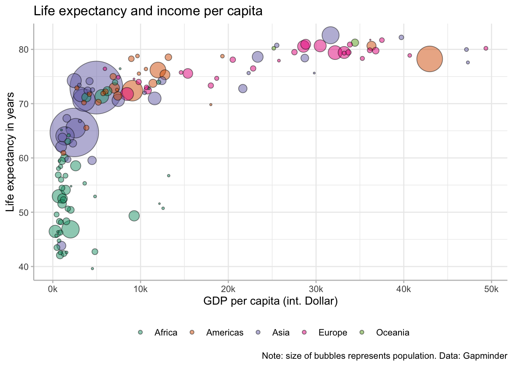
We start by creating the basic ggplot2 object, which is best thought of as a fancy list. To this end we use the function ggplot2::ggplot()
gdp_plot <- ggplot2::ggplot()
typeof(gdp_plot)[1] "object"When we call this list, the plot described by it gets rendered:
gdp_plot
Of course, there is no plot since the list is basically empty. All the specifications in the ggplot2::ggplot() function are best thought of as default values. In our case we first specify the data set we use for our plot:
gdp_plot <- ggplot2::ggplot(
data = gdp_data
)But this alone does not do anything good. We also need to inform ggplot2 on how it should map the variables from the data set onto the plot. In a first step, lets clarify that the variable gdpPercap should be mapped on the x-axis and the variable lifeExp on the y-axis.
This is done via the argument mapping and the function ggplot2::aes(), which takes as arguments the aesthetics of the plot and the variable names that should be plotted on them:
gdp_plot <- ggplot2::ggplot(
data = gdp_data,
mapping = ggplot2::aes(
x = gdpPercap,
y = lifeExp
)
)
gdp_plot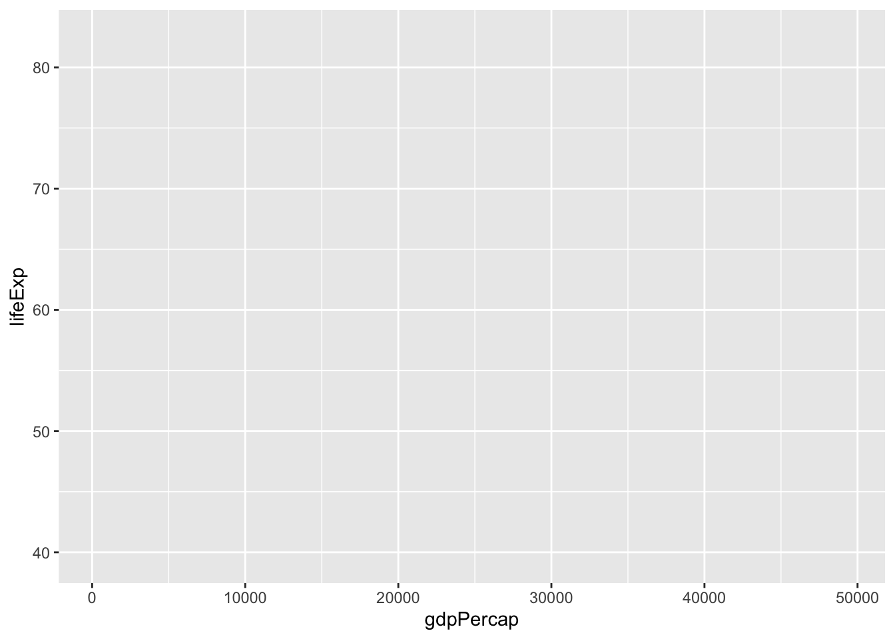
This looks better. Note that ggplot2 chooses a default range for the axes based on the range of the variables in the underlying data set:
min(gdp_data$lifeExp); max(gdp_data$lifeExp)[1] 39.613[1] 82.603min(gdp_data$gdpPercap); max(gdp_data$gdpPercap)[1] 277.5519[1] 49357.19We now want to add an additional layer with data points on our plot. Points are so called geom: a certain geometrical object representing data points. The function to add points is called ggplot2::geom_point() and we literally just add it to our plot:
gdp_plot <- gdp_plot + geom_point()
gdp_plot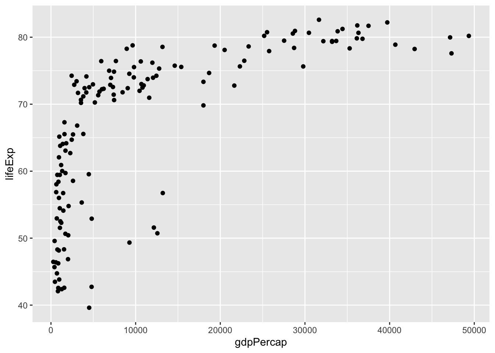
This already reveals much of the general workflow involved in creating a plot: define a raw object and add and refine layers. Looking at the plot above, one thing that is missing is that the dots are filled in different colors, representing the continents of the countries, and the size of the dots represent the population size of the countries.
To achieve this we need to map the variable continent from the data set to the aesthetic color in the plot, and the variable pop to the aesthetic size:
gdp_plot <- ggplot2::ggplot(
data = gdp_data,
mapping = ggplot2::aes(
x = gdpPercap,
y = lifeExp,
size = pop,
color = continent
)
) +
ggplot2::geom_point()
gdp_plot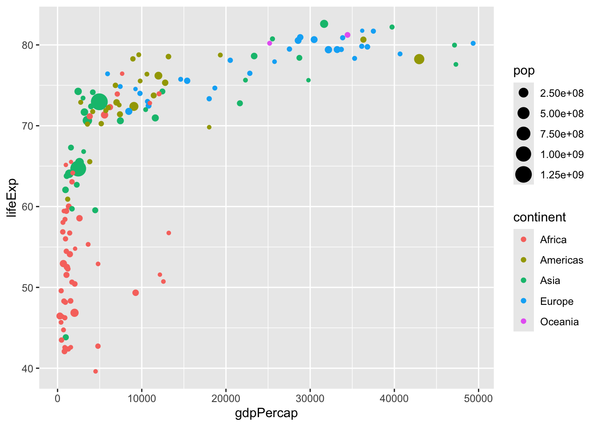
What is not so nice is that the points are partly overlapping and bigger points might conceal smaller points below them. To address this problem we might make the plots a bit transparent. Since this is not a mapping from a variable from the data set to an aesthetic, but a general setting that should apply to all points equally, we do not specify it via the argument aes, but via the parameter responsible for transparency directly. This parameter is called alpha and we can set it for the affected geom directly:
gdp_plot <- ggplot2::ggplot(
data = gdp_data,
mapping = ggplot2::aes(
x = gdpPercap,
y = lifeExp,
size = pop,
color = continent
)
) +
ggplot2::geom_point(alpha=0.5)
gdp_plot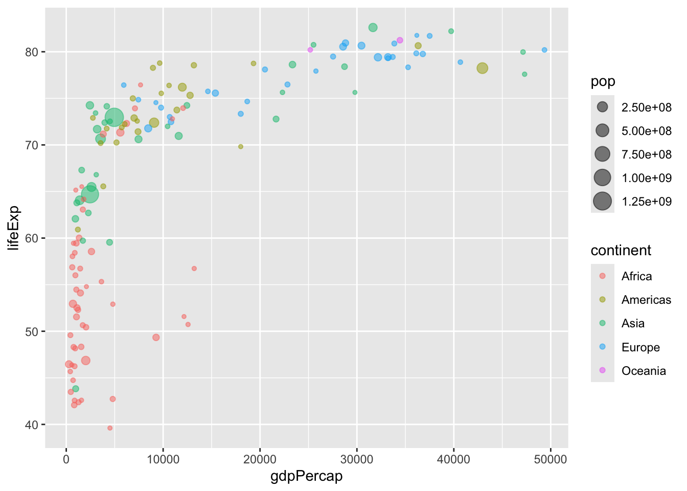
But now there is the danger for points to ‘melt into each other’. Better have their circle in black, and only color their interior. We can do so by replacing color in the aesthetics with fill, and set the color explicitly to 'black'. However, this distinction between circle color and fill color is not available for all kinds of point shapes. If you looked, for instance, here you find that the shape with index 21 allows this:
gdp_plot <- ggplot2::ggplot(
data = gdp_data,
mapping = ggplot2::aes(
x = gdpPercap,
y = lifeExp,
size = pop,
fill = continent
)
) +
ggplot2::geom_point(
shape=21, color="black", alpha=0.5)
gdp_plot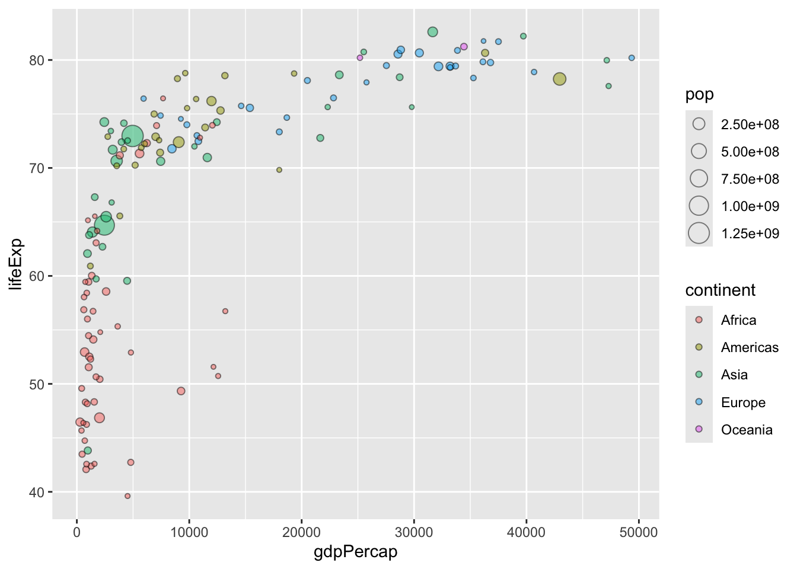
Progress cannot be denied! Now lets fix the labels and annotations of the plot. Here, the function ggplot2::labs() comes in handy. It accepts arguments such as title, subtitle, caption, and several more. The help() function gives further information about the possibilities.
In our case we want to add a title, specify the x and y axis, and add a caption:
gdp_plot <- gdp_plot +
ggplot2::labs(
title = "Life expectancy and income per capita",
caption = "Note: size of bubbles represents population. Data: Gapminder",
x = "GDP per capita (int. Dollar)",
y = "Life expectancy in years"
)
gdp_plotSo far, so good. The x-axis is a bit clumsy, though. It would be better to scale the number down so that it shows 1000 dollars. The scale properties of the axes can be defined by the functions scale_*_**(), where the first * should be replaced by the aesthetic we want to adjust, and the second by a keyword indicating whether the variable is discrete or continuous, or whether we want to provide fully manual specifications. In our case we are interested in changing the x-axis, which represents a continuous variable (GDP). Thus we call scale_x_continuous(). Since we want to change the labels on the axis we specify the argument labels. To scale the labels we make use of a function from the scales-package: scales::number_format(). And to make this clear on the axis we add the suffix ‘k’:
gdp_plot <- gdp_plot +
ggplot2::scale_x_continuous(
labels = scales::number_format(scale = 0.001, suffix = "k")
)
gdp_plot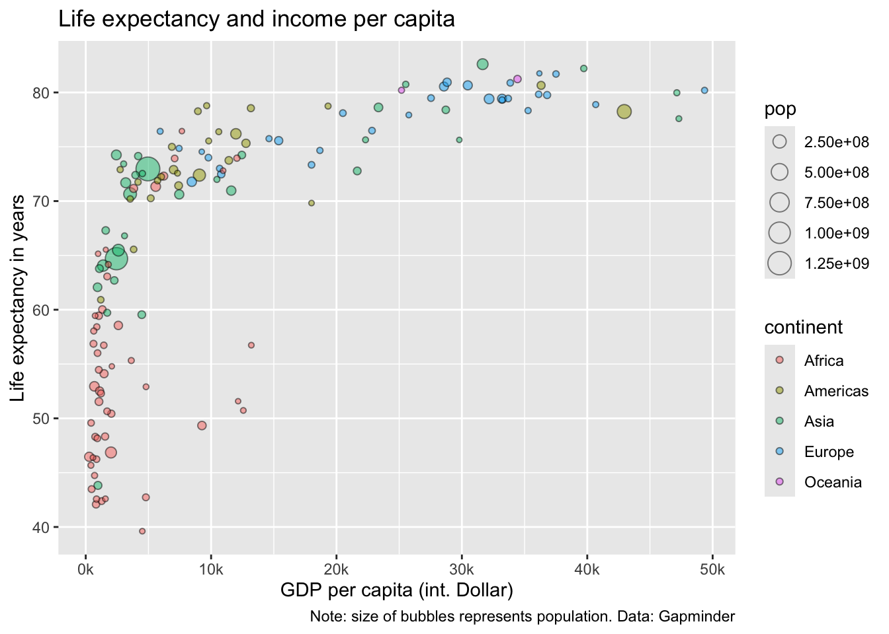
Now lets turn to the legends. First of all we want to remove the legend for the bubble size since, first, the mapping of the bubble size is not straightforward to understand and, second, we already indicated that the bubble size represents population in the caption of the plot.
We can use ggplot2::scale_size_continuous() with guide="none" and also stretch the limits a bit to make the differences more straightforward to see:
gdp_plot <- gdp_plot +
ggplot2::scale_size_continuous(
guide = "none",
range = c(0.1, 24)
)Now we want to put the remaining legend to the bottom of the plot. For such specific changes the function ggplot2::theme() is usually a good option. It allows us to change almost everything on a plot. The argument to place legends at the bottom is legend.position:
gdp_plot <- gdp_plot +
ggplot2::theme(legend.position = "bottom")
gdp_plot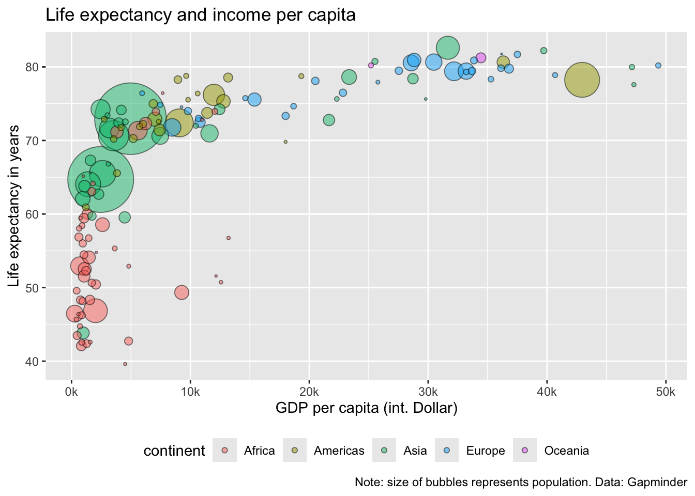
Since the theme() function is so extensive there are also many pre-defined themes for plots, which are best explored in the internet. A good default one is the black-and-white theme, which we can use via ggplot2::theme_bw():
gdp_plot <- gdp_plot +
ggplot2::theme_bw()
gdp_plot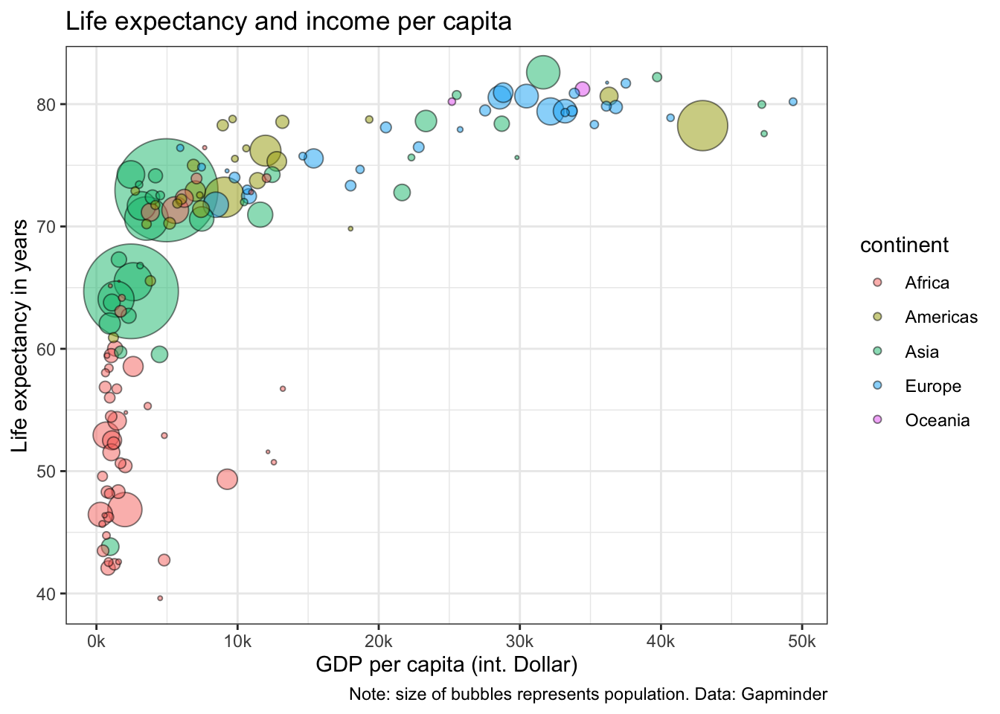
Oops, while everything looks nicer, some of our previous changes, such as moving the legend to the bottom and removing its title were overwritten! It thus makes always sense to first call the default theme, and then make further changes via ggplot::theme().
Of course, we can then also make further adjustments to the theme, e.g. by removing the panel of the plot. Removing elements of the plot via ggplot2::theme() requires us to set these elements via the function ggplot2::element_blank():
gdp_plot <- gdp_plot +
ggplot2::theme_bw() +
theme(
legend.position = "bottom",
panel.border = ggplot2::element_blank()
)
gdp_plotIt would be a bit nicer to keep the axis lines of the x- and y-axis. Lets do this by specifying them explicitly via ggplot2::element_line():
gdp_plot <- gdp_plot +
ggplot2::theme(
axis.line = ggplot2::element_line(colour = "grey"))
gdp_plotThe ticks of the values should have the same color as the axis lines:
gdp_plot <- gdp_plot +
ggplot2::theme(
axis.ticks = ggplot2::element_line(colour = "grey"))
gdp_plot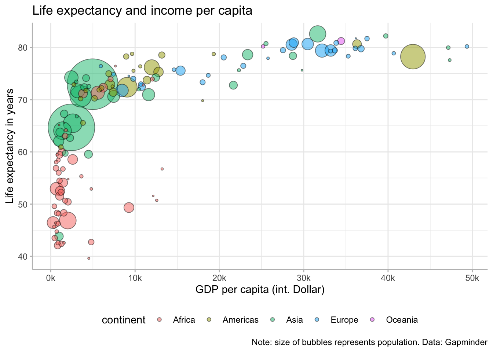
And the legend title should be removed:
gdp_plot <- gdp_plot +
ggplot2::theme(legend.title = ggplot2::element_blank())
gdp_plot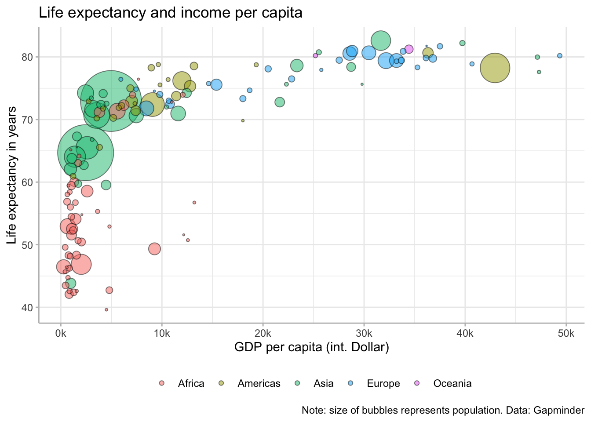
The only thing that distinguishes our plot from the initial example is the color palette. There are many different palettes available, you can search for your favorite one in the internet. Here we use one provided by the package RColorBrewer, which can be used for the fill-aesthetic directly:
gdp_plot <- gdp_plot +
ggplot2::scale_fill_brewer(palette = "Dark2")
gdp_plot
Thats it! This was, of course, only a tiny glimpse on what you can achieve using ggplot2, but it should suffice for the start. Moreover, what is more important, you learned about the general workflow when developing a plot: start with creating a list with ggplot2::ggplot() and then adjust your plot layer by layer until you are satisfied.
Here is the whole code we used for the figure:
gdp_plot <- ggplot2::ggplot(
data = gdp_data,
mapping = ggplot2::aes(
x = gdpPercap,
y = lifeExp,
size = pop,
fill = continent
)
) +
ggplot2::geom_point(
shape=21, color="black", alpha=0.5) +
ggplot2::labs(
title = "Life expectancy and income per capita",
caption = "Note: size of bubbles represents population. Data: Gapminder",
x = "GDP per capita (int. Dollar)",
y = "Life expectancy in years"
) +
ggplot2::scale_x_continuous(
labels = scales::number_format(scale = 0.001, suffix = "k")
) +
ggplot2::scale_size_continuous(
guide = "none",
range = c(0.1, 24)
) +
ggplot2::scale_fill_brewer(
palette = "Dark2"
) +
ggplot2::theme_bw() +
ggplot2::theme(
legend.position = "bottom",
legend.title = ggplot2::element_blank(),
panel.border = ggplot2::element_blank(),
axis.line = ggplot2::element_line(colour = "grey"),
axis.ticks = ggplot2::element_line(colour = "grey")
)Of course, for simple exploratory analysis, you do not need so many details as we just did, but for publication purposes it is good to know how far you can get!
Another great thing is that the syntax remains largely the same, no matter whether you want to make a scatter plot as above, or a line graph or a histogram. All that changes is the particular geom_*() function used.
To illustrate the similarities of the code used for a different plot type, we will now use a data set that is very similar to the one used previously, only this time we have observations for GDP per capita and life expectancy for several years, aggregated for the different continents. The data set is again made available via the package DataScienceExercises:
gdp_data_agg <- DataScienceExercises::aggGDPlifexpAgain, we first inspect the data to get a feeling about the variables that are present:
head(gdp_data_agg, 3)# A tibble: 3 × 5
continent year lifeExp pop gdpPercap
<fct> <int> <dbl> <dbl> <dbl>
1 Africa 1952 39.1 4570010. 1253.
2 Africa 1957 41.3 5093033. 1385.
3 Africa 1962 43.3 5702247. 1598.Lets plot the dynamics of GDP per capita over time for the different continents. We can now simply copy-paste a lot of the code we have used before. Lets start with the uncontroversial beginning and just replace the name of the data set and the variable names:
gdp_dyn_plot <- ggplot2::ggplot(
data = gdp_data_agg, # <- Replaced
mapping = ggplot2::aes(
x = year, # <- Replaced
y = gdpPercap, # <- Replaced
color = continent
)
) +
ggplot2::geom_point()
gdp_dyn_plot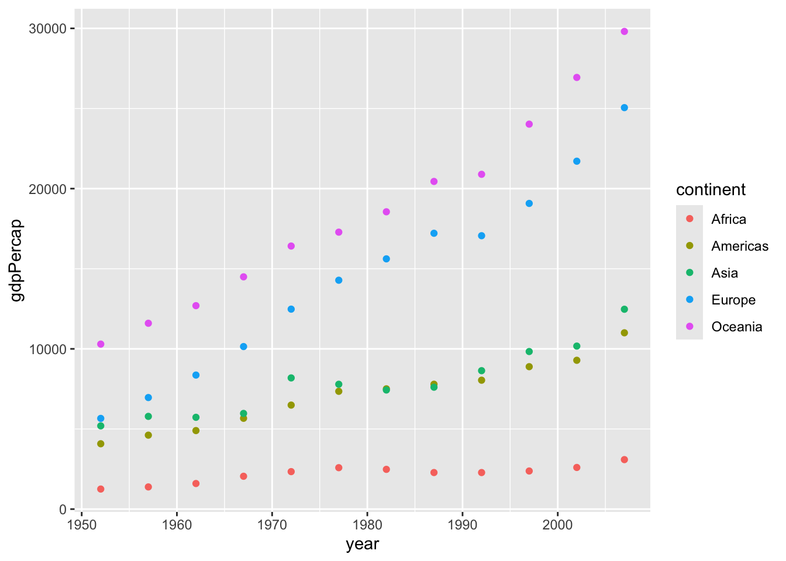
This is not so bad! But it would be nice to add an additional geom that connects the dots with lines. No problem, simply add ggplot2::geom_line() to the plot:
gdp_dyn_plot <- gdp_dyn_plot +
geom_line()
gdp_dyn_plot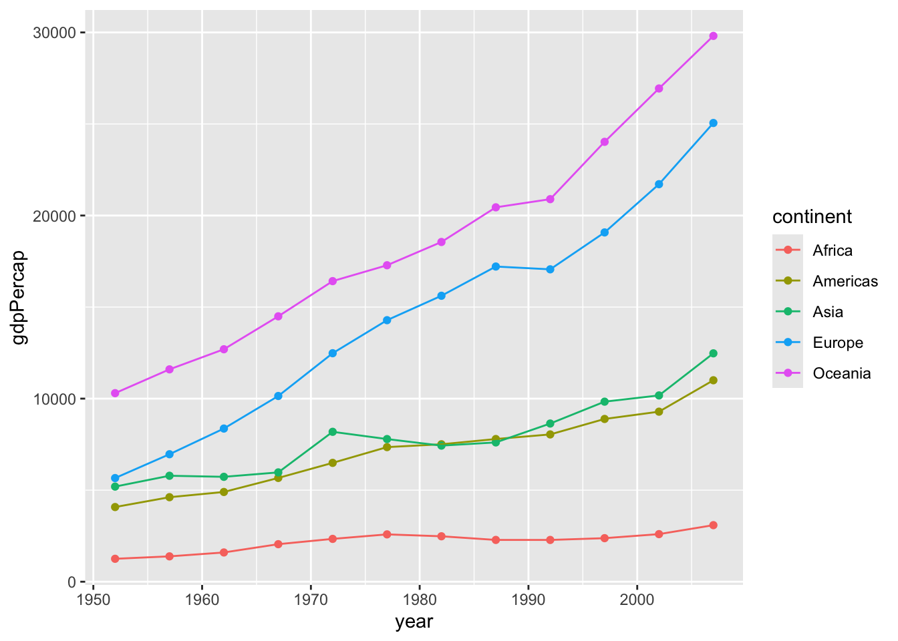
Much of the code above only requires slight adjustments: the scaling of the x-axis should now be applied to the y-axis so we change ggplot2::scale_x_continuous() into ggplot2::scale_y_continuous(). Moreover, colors should change not for the fill but the color aesthetic, so ggplot2::scale_fill_brewer() becomes ggplot2::scale_color_brewer():
gdp_dyn_plot <- gdp_dyn_plot +
ggplot2::scale_y_continuous(
labels = scales::number_format(scale = 0.001, suffix = "k")
) +
ggplot2::scale_color_brewer(
palette = "Dark2"
)
gdp_dyn_plot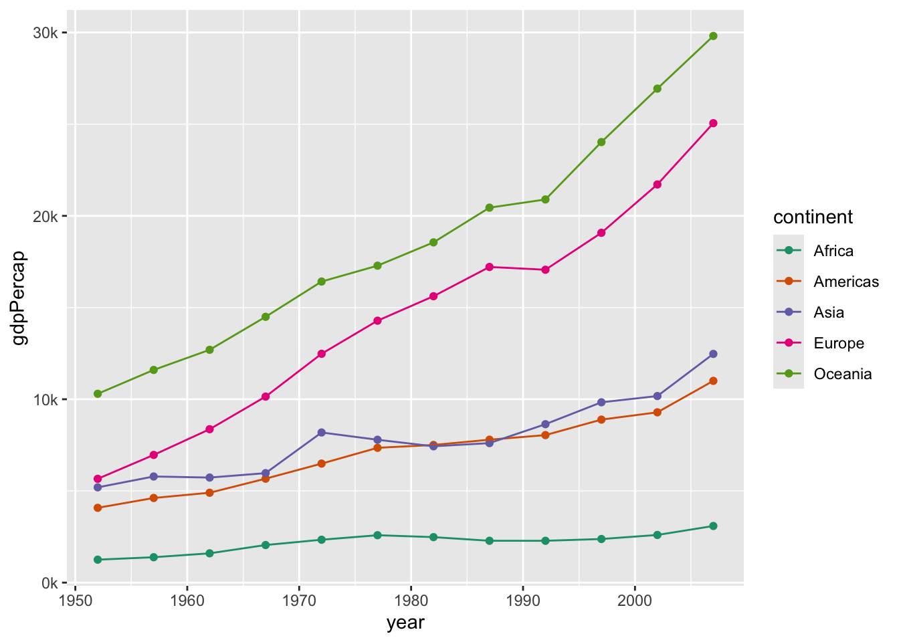
Aside from this, we can pretty much re-use almost the entire code from above with which we adjusted the legend, the labels, as well as the overall theme:
gdp_dyn_plot <- gdp_dyn_plot +
labs(
title = "The divergence of income per capita",
caption = "Note: country data averaged over continents. Data: Gapminder",
y = "GDP per capita (int. Dollar)"
) +
ggplot2::theme_bw() +
theme(
legend.position = "bottom",
legend.title = ggplot2::element_blank(),
panel.border = ggplot2::element_blank(),
axis.line = ggplot2::element_line(colour = "grey"),
axis.ticks = ggplot2::element_line(colour = "grey"),
axis.title.x = ggplot2::element_blank()
)
gdp_dyn_plot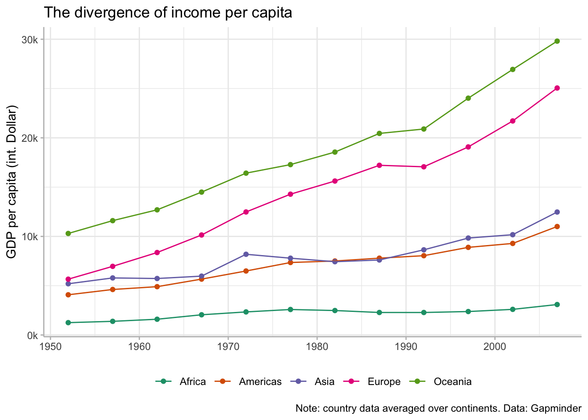
A very nice plot — and much faster to complete than the first one, thanks to the amazingly consistent syntax of ggplot2!
You can save your plot using the function ggplot2::ggsave(). The function saves, by default, the last plot you created, but it is better to specify the plot you want to save directly. Other important arguments are the file name (which also determines the format), and the size:
ggplot2::ggsave(
plot = gdp_plot,
filename = "gdp_plot.pdf",
width = 6, height = 4.2)ggplot2@misc{gräbner-radkowitsch2026,
author = {Gräbner-Radkowitsch, Claudius},
editor = {Gräbner-Radkowitsch, Claudius},
title = {Visualization with Ggplot2},
date = {2026-06-16},
url = {https://euf-methodology-hub.netlify.app/resources/r-programming/visualization-ggplot2},
langid = {en}
}